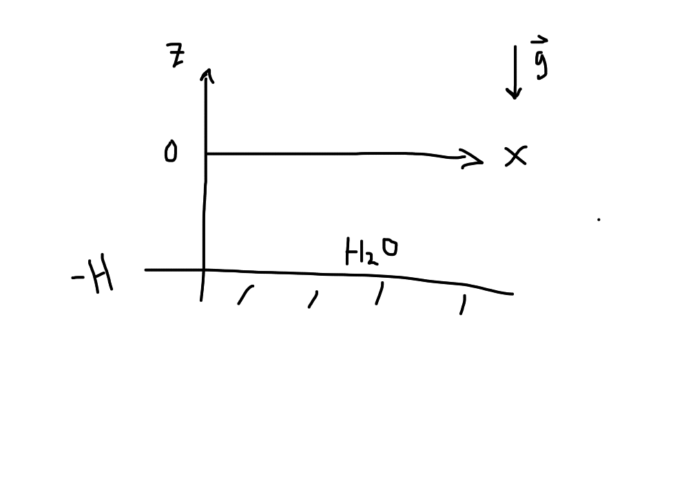

Waves
Contents
Waves¶
We will now begin to consider perturbations to our equations. Here, we consider small, stable perturbations. The standard recipe is to break our fluid properties \((\vec v, \rho, P, \Phi, \cdots)\) into \(0th\) order \(+ 1\)st order pieces. We will assume that the first order pieces are \(\ll\) than the \(0\)th order pieces. The word for this is linear perturbation theory.
Here is a note on notation. We will have something like:
where the subscript refers to the order, i.e., \(\vec v_1 \ll \vec v_0\). This means:
\(\vec v = \vec v_0 + \vec v_1\)
\(P = P_0 + P_1\)
\(\rho = \rho_0 + \rho_1\)
\(\Phi = \Phi_0 + \Phi_1\)
Note
The thermal behavior of the perturbations \(P_1\), \(\rho_1\) need to behave the same way was the \(0\)th order counterpart. An example is the equation of state – an atmosphere might be isothermal, but the perturbations can be adiabatic.
Sound Waves: The Simplest Case¶
Consider a static, uniform (unperturbed) medium. We will ignore gravity. Thus, all we have is pressure for the physics.
In this case,
We now plug these into our fluid equations.
Zeroth Order Equations¶
The \(0\)th order fluid equations are:
The Continuity Equation
This is satisfied trivially. This tells us nothing.
Euler Equation
This is also satisfied trivially.
First Order Equations¶
Continuity Equation
Euler Equation
Note that the advection term is \(0\) to first order.
This is simply two coupled equations which we can solve! But, before that, we will introduce a new quantity, the sound speed \(v_s\).
Sound Speed
where this measures how pressure changes with density.
Combining the continuity and the euler equation together by taking the time derivative of the first equation:
where we have assumed that the sound speed is a constant. This is a trivial waves equation! We have solved this in our childhood:
The solution is thus just a relationship between \(k\) and \(\omega\). This gives a dispersion relation for a free wave:
For completeness, we have:
The Group Velocity
v_g \equiv \frac{\partial \omega}{\partial k} = v_s
The Phase Velocity
v_{phase} \equiv \frac{\omega}{k} = v_s
For sound waves, these are independent of the wavenumber \(k\). When this is the case, we say we have “non-dispersive waves.”
What about perturbed fluid velocities/other quantities?¶
We can use our solution for \(\rho\) and the Euler Equation above to get:
We can show that:
Note that the perturb quantites \(\vec v_1, \rho,\) and \(P\) are all in phase.
Fourier Transforms and Conceptual Review¶
Note that FTs are nice since we term finite difference problems into algebraic problems. This is awesome numerically!
We have some density perturbation. This gives us a pressure gradient and thus a force. This force accelerates the fluid element. This perturbed velocity further induces a density perturbation, leading to sound wave propagation!
Some Numbers and Notes About Sound Speed¶
Isothermal Sound Speed
Isothermal Sound Speed:
Remember that the ideal gas has: \(P = \frac{\rho}{\mu m_p} k_b T\). This makes:
Adiabatic Sound Speed
The adiabatic ideal gas has \(P = \kappa \rho^\gamma\). Taking the derivative, we have:
This gives:
Which one of these speeds are relevant?
Examples of Air Sound Speed¶
Adiabatic: (A useful thing to know: \(k_b T \sim \frac{1}{40} \text{ eV}\) at room temperature air)
Has \(v_s^\text{adiabatic} = \sqrt{\frac{7}{5}\frac{1/40 \text{ eV}}{28.8 \cdot 10^{9} \text{ eV }}} \cdot c \sim 330 \text{ m/s}\)
Isothermal:
Has \(v_s^\text{isothermal} \sim 280 \text{ m/s}\).
The data is closer to the adiabatic case.
Examples of Water Sound Speed¶
This is closer to \(v_s \sim 1500 \text{ m/s}\) !
Examples of Sound Speed in Iron¶
This is closer to \(v_s \sim 5 \text{ km/s}\).
Gravity Waves¶
Let’s look at water waves on the surface of Earth with the same spirit as in sound waves.
{kind=link}
Consider a single fluid of constant density \(\rho_0\) in equilibrium (\(\vec v_0 = \vec 0\). ) This means that the Euler Equation is:
Thus:
Perturbed Equations¶
We have \(\vec v = \vec v_0 + \vec v_1 = \vec v_1\), \(P = P_0 + P_1\), \(\rho = \rho_0 = \text{ constant, incompressible}\), and \(\rho_1 = 0\) since it is incompressible. Note that \(\vec \nabla \Phi = - \vec g\) due to the external gravitational field of Earth. \(\Phi_1 = 0\) means that the self-gravity of the water is negligible. The linearized, 1st order fluid equations are thus:
Continuity Equation
Remember from before that the incompressible condition implies:
Note we chose our coodinates (considering waves travelling along \(x\)-axis) such that this equation is:
Euler Equation}
We have:
Let’s write out the components:
We can choose to solve for \(P\) or \(\vec v\), and we choose \(P\) first. We can use the equation from the Contunity Equation (by take the partial derivative) to get:
This is:
This is a Laplace Equation in \(2D\). This has solutions! Because we are looking for waves along \(x\), we have the ansatz:
Plug this into the Laplace Equation, and we get:
All the action will now come from the boundary conditions. We can write:
where the second equation for \(v_{1z}\) comes from the 2nd Euler Equation above and where we have gone into Fourier Space.
Boundary Conditions¶
1. \(z=-H\), the bottom of the sea. Here, we have:
This condition implies that \(\boxed{B \rightarrow e^{-2kH}}\). Immediately, we have:
Similarly,
2. At the surface of the (free aka no force) air-water interface (z=0 for our coordinates). Let’s introduce the fluid displacement vector \(\vec \xi(\vec r, t)\) defined such that:
The vertical displacement is thus:
which we actually hav aen equation for in 1. .
Note that saying we have a “free air water interface” is the same as saying we have “constant pressure along fluid element.” This translates to a condition:
We will see this next time.